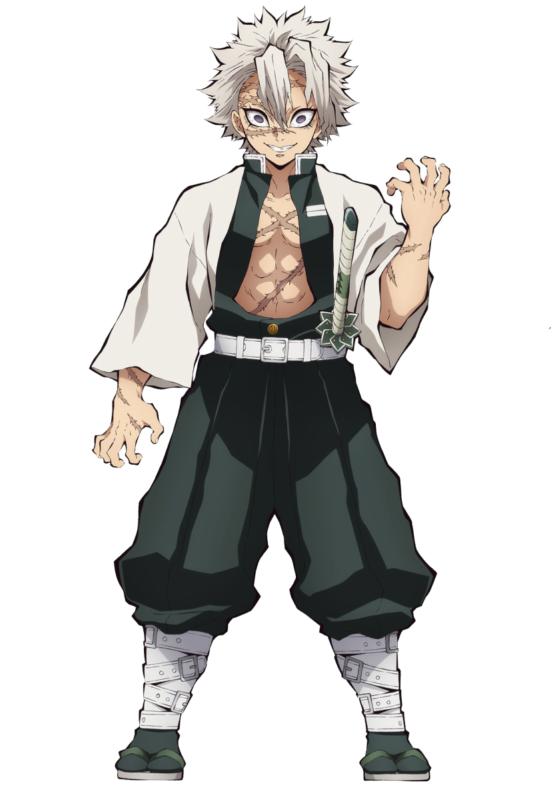

Go Back
Sanemi Shinazugawa
Breathing style: WIND BREATHING
Sanemi Shinazugawa is a major supporting character of Demon Slayer: Kimetsu no Yaiba. He is a Demon Slayer of the Demon Slayer Corps and the current Wind Hashira.